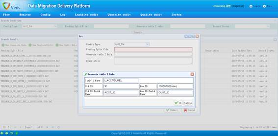
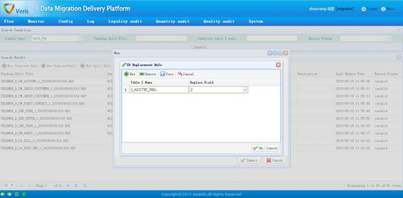
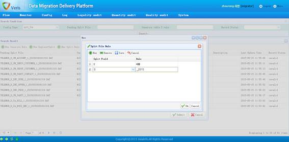

SplitFile控件定义了原始数据文件的三种业务动作：生成I表规则（即新老ID的对应关系）、ID替换规则（即老ID依据何种I表规则替换为新ID）、文件拆分规则。SplitFile的目的是将一个大地原始文件均匀地分割为多个较小的子文件，以适应MYSQL数据库单表大小要求。
1、I表生成规则

SplitFile控件I表生成规则配置页面
功能描述：
一条完整的SplitFile控件I表生成规则包括带拆分文件（Pending Split File）、生成I表规则（Generate Table I Rule）两个关键部分，具体如下：
待拆分的文件，支持正则表达式的书写格式，如：.*_CM_PARTY_.*.DAT
生成I表规则，由生成的I文件名称和规则描述构成。其中，规则描述包括两个部分：第一部分为原始ID，即在待拆分文件中的ID，一般为待拆分文件的某个域，用“$域”的格式表达，如$2；第二部分为映射新ID，一般为一组计算公式，目前除了支持加减乘除、括号外，还支持seq表达式，用来描述一个以I文件名称为粒度的自增长序列，如1000000+seq。
2、ID替换规则

新建ID替换规则页面
功能描述：
一条完整的SplitFile控件ID替换规则包括待拆分文件中需做ID替换的域和对应做ID替换的I表文件名称，表示待拆分文件中的某个域遵循该I表文件映射关系替换成新的ID。
一个待拆分文件若有多个域需要做ID替换，则配置多条ID替换规则即可。
3、文件拆分规则

新建文件拆分规则页面
功能描述：
一条完整的SplitFile控件文件拆分规则包括待拆分文件中拆分依赖的域和文件拆分表达式。
文件拆分表达式，通过使用* ? $三种特殊符号来表达拆分的方式，*表示任意个任意字符，?表示一个任意字符，$表示匹配的一个字符。
如果对应于某个域的拆分表达式为一个固定字符串，则将域编号配置为0，然后在拆分表达式区域直接书写该固定字符串即可。